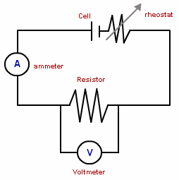
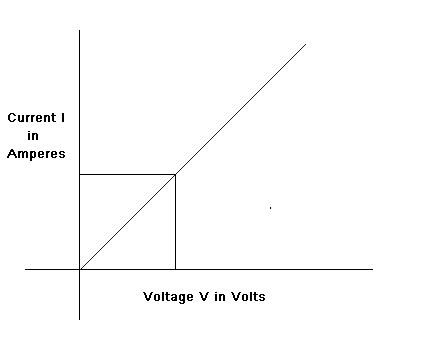

Ohm's Law Experiment
To perform the validity of the ohms law we can perform experiment and analyse the results obtained in the experiment.

Steps of the experiment:
- Study the circuit setup, observe the voltmeter is parallel to the resistor and the ammeter in series
- Start measuring the voltage and current as you move the rheostat moving hand from maximum position to the minimum position in the steps of constant increase in current.
- Now with this data plot a graph between the voltage and the current.
- What do you observe from it? Can you find the value of the resistance
- The graph (see below) between voltage and current is linear that is there is constant increase in current when the rheostat is moved from maximum resistance position to the minimum resistance position.
